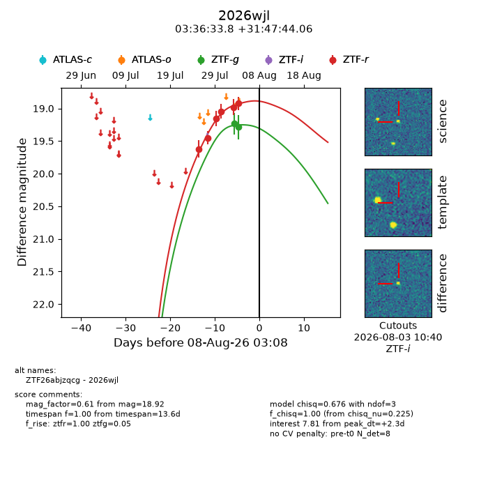
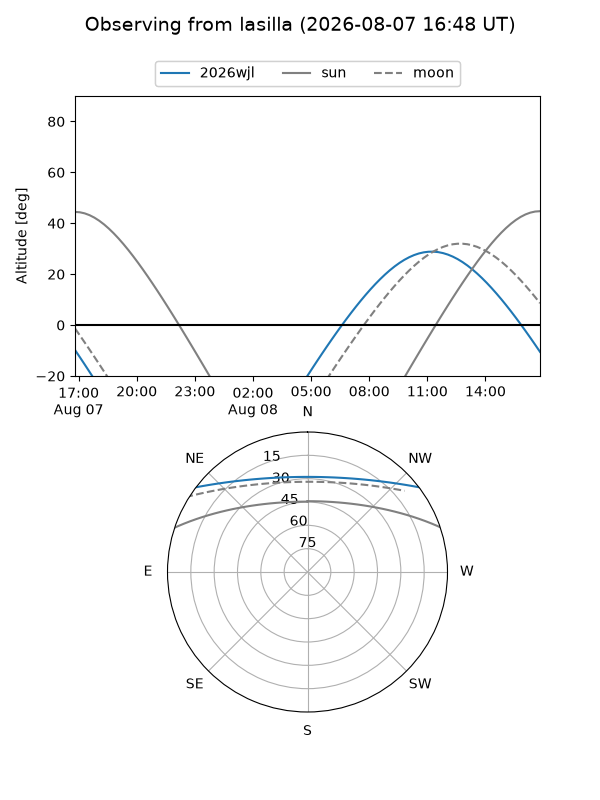
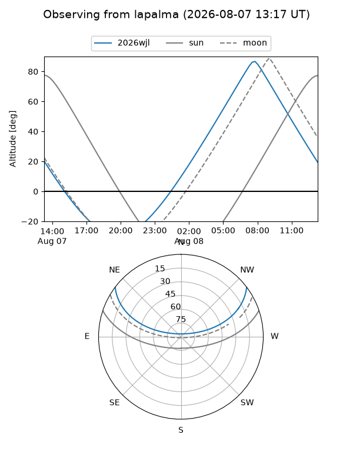
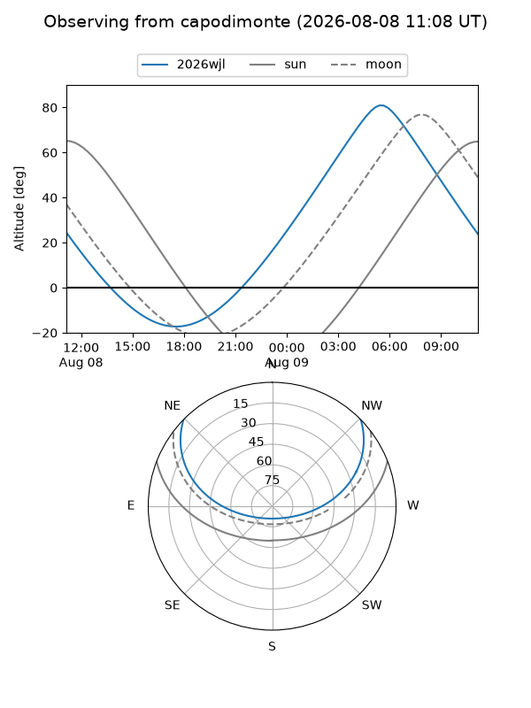
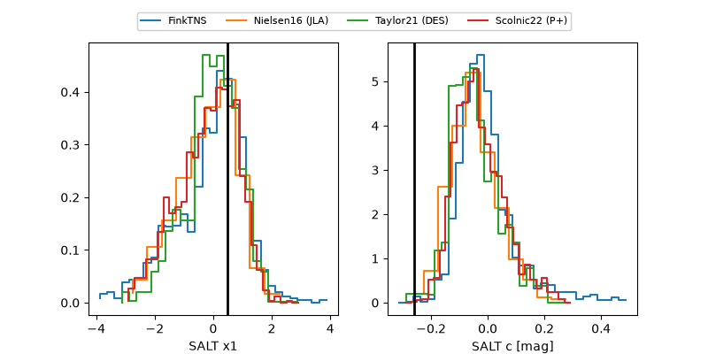

2026wjl
Target 2026wjl at 2026-08-08 14:48
Aliases and brokers:
FINK-ZTF: ztf.fink-portal.org/ZTF26abjzqcg
Lasair-ZTF: lasair-ztf.lsst.ac.uk/objects/ZTF26abjzqcg
ALeRCE-ZTF: alerce.online/object/ZTF26abjzqcg
YSE-PZ: ziggy.ucolick.org/yse/transient_detail/2026wjl
TNS name: wis-tns.org/object/2026wjl
Direct TNS query: direct search
alt names
ZTF26abjzqcg (ztf,fink_ztf)
2026wjl (tns,yse)
Coordinates:
equatorial (ra, dec) = 54.1408,+31.79557
equatorial (HMS+DMS) = 03:36:33.78,+31:47:44.06
galactic (l, b) = (159.3469,-19.15888)
Flags:
TNS type: nan
peak dt: +2.8
Photometry:
last ztfg=19.28, ztfr=18.92
2 ztfg, 6 ztfr detections
Lightcurve

Visibility



Additional plots
